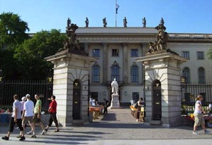

ZEUS Workshop 2010
Second Central European Workshop on Services and their Composition
February 26-27, 2010, Berlin, Germany
Program
Thursday, February 27, 2010
- 13:00 Jan Sürmeli and Christian Gierds. Welcome
- 13:15 Mathias Weske. Research Directions in BPM (Keynote)
- 13:45 Niels Lohmann. Communication models for services
- 14:15 Stephan Buchwald, Julian Tiedeken, Thomas Bauer, and Manfred Reichert. Anforderungen an ein Metamodell für SOA-Repositories
- 14:45 Break
- 15:15 Frank Leymann, Tobias Unger, and Sebastian Wagner. On Designing a People-oriented Constraint-based Workflow Language
- 15:45 Daniel Eichhorn and Agnes Koschmider. 3D-Darstellung von Ressourcenattributen bei der Geschäftsprozessmodellierung
- 16:15 Matthias Weidlich and Mathias Weske. Structural and Behavioural Commonalities of Process Variants
- 16:45 Break
- 17:15 Kathrin Kaschner. Safira: implementing set algebra for service behaviour
- 17:45 Cédric Favre. An efficient approach to check an acyclic workflow graphs against lack of synchronization
- 18:15 Matthias Weidlich and Mathias Weske. On the Behavioural Dimension of Correspondences between Process Models
- 20:00 Workshop Dinner
Friday, February 26, 2010
- 09:30 Artem Polyvyanyy. Structural Abstraction of Process Specifications
- 10:00 Oliver Kopp, Frank Leymann, and Fei Wu. Mapping Interconnection Choreography Models to Interaction Choreography Models
- 10:30 Thomas Heinze, Wolfram Amme, and Simon Moser. Prozessumstrukturierung unter Berücksichtigung von Nachrichteninhalten
- 11:00 Break
- 11:30 Tobias Unger, Hanna Eberle, and Frank Leymann. Research Challenges on Person-centric Flows
- 12:00 Agnes Koschmider, Andreas Oberweis, and Huayu Zhang. Prozessorientierte Koordination von Kooperationen in Sozialen Netzwerken
- 12:30 Break – Lunch at Mensa
- 13:30 Dieter Schuller. Sichere und Zuverlässige Prozessausführung in Serviceorientierten Architekturen
- 14:00 Christian Gierds and Jan Sürmeli. Estimating costs of a service
- 14:30 Apostolos Papageorgiou. Adaptionsmechanismen für die QoS-Verbesserung bei der Mobilen Nutzung von Web Services
- 15:00 Break
- 15:30 Olivia Oanea. Quick adaptability checks
- 16:00 Oliver Kopp, Katharina Görlach, and Frank Leymann. Extending Choreography Spheres to Improve Simulations
- 16:30 Jan Sürmeli and Christian Gierds. Farewell
